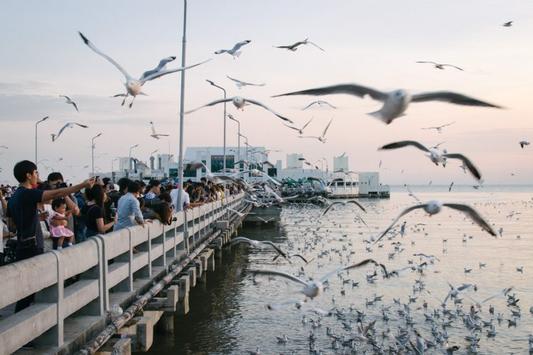

1.ฟาร์มจระเข้สมุทรปราการ

ฟาร์มจระเข้สมุทรปราการ ฟาร์มจระเข้สมุทรปราการ เป็นหนึ่งในสถานที่ท่องเที่ยวที่น่าสนใจและเก่าแก่ที่สุดแห่งหนึ่งในประเทศไทย ตั้งอยู่ที่ตำบลท้ายบ้าน อำเภอเมือง จังหวัดสมุทรปราการ เปิดให้บริการมานานกว่า 70 ปี และยังคงเป็นที่นิยมของนักท่องเที่ยวทั้งชาวไทยและชาวต่างชา
2.เมืองโบราณ

เมืองโบราณ คือสวนสนุกประวัติศาสตร์ขนาดใหญ่ริมแม่น้ำเจ้าพระยา จังหวัดสมุทรปราการ ที่รวบรวมสถาปัตยกรรมไทยอันงดงามจากทั่วทุกภาคของประเทศมาไว้ในที่เดียว ทำให้คุณได้ย้อนเวลาไปสัมผัสกับวิถีชีวิตและวัฒนธรรมไทยในอดีตได้อย่างใกล้ชิด
3.สถานตากอากาศบางปู
สถานตากอากาศบางปู เป็นหนึ่งในสถานที่ท่องเที่ยวใกล้กรุงเทพมหานครที่ได้รับความนิยมอย่างสูง ด้วยบรรยากาศริมทะเลที่เงียบสงบและเป็นที่รู้จักกันดีในฐานะแหล่งดูนกนางนวลอพยพในช่วงฤดูหนาว ทำให้ที่นี่เป็นจุดหมายปลายทางยอดนิยมสำหรับผู้ที่ต้องการพักผ่อนหย่อนใจและสัมผัสธรรมชาติ
4.พิพิธภัณฑ์ช้างเอราวัณ

พิพิธภัณฑ์ช้างเอราวัณ เป็นหนึ่งในแลนด์มาร์คที่โดดเด่นและเป็นที่รู้จักกันดีของประเทศไทย ด้วยรูปลักษณ์อันเป็นเอกลักษณ์ของประติมากรรมช้างสามเศียรขนาดใหญ่ ตั้งอยู่บนถนนสุขุมวิท จังหวัดสมุทรปราการ พิพิธภัณฑ์แห่งนี้ไม่เพียงแต่เป็นสถานที่ท่องเที่ยวที่น่าสนใจ แต่ยังเป็นแหล่งรวมศิลปะ วัฒนธรรม และประวัติศาสตร์อันยาวนานของไทยอีกด้วย
5.หอชมเมืองสมุทรปราการ

หอชมเมืองสมุทรปราการ หรือ อุทยานการเรียนรู้อ่าวไทย เป็นแลนด์มาร์คแห่งใหม่ของจังหวัดสมุทรปราการ ที่มาพร้อมกับหอคอยชมวิวสูงตระหง่าน ให้คุณได้สัมผัสกับวิวเมืองสมุทรปราการแบบพาโนรามา 360 องศา เหมือนได้มองลงไปยังเมืองที่อยู่เบื้องล่างอย่างใกล้ชิด